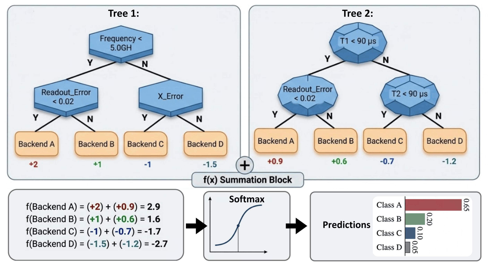
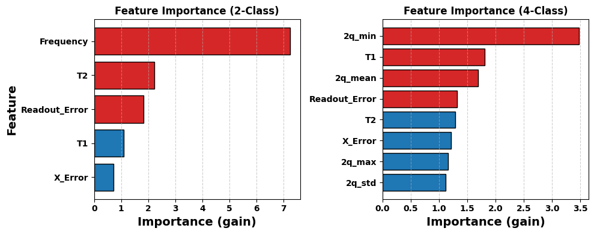
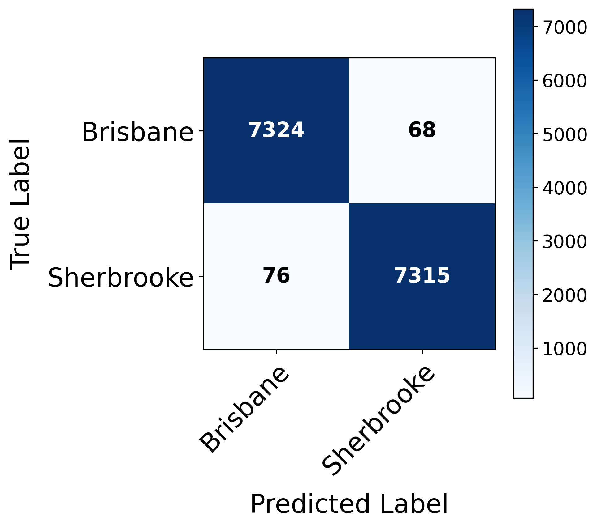
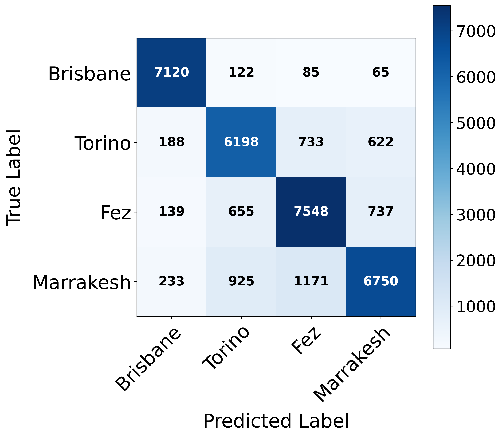

Cloud-based access to quantum hardware is now the dominant execution model in the NISQ era, but multi-tenant quantum cloud platforms give users limited transparency into which physical processor executed their circuits. This creates security and trust concerns when providers redirect workloads, expose shared hardware to crosstalk, or operate heterogeneous devices with different calibration characteristics.
This work proposes a calibration data-based quantum device fingerprinting framework that verifies cloud hardware without requiring additional circuit execution or measurement overhead. Historical IBM Quantum calibration records are transformed into per-qubit feature vectors and used to train an XGBoost classifier that learns distinctive device-specific signatures across multiple generations of quantum processors.
The proposed approach achieves 99.03% accuracy for binary identification of two IBM Eagle processors and 82.95% accuracy in a more challenging four-class setting across Eagle and Heron processors, demonstrating practical device identification from publicly available calibration metrics.
The framework constructs quantum hardware fingerprints from historical calibration metrics collected through IBM's Qiskit Runtime API. Each qubit is represented by a composite feature vector including frequency when available, coherence times, readout error, Pauli-X gate error, and two-qubit gate error statistics. These features capture both single-qubit behavior and interaction-level noise patterns.
An XGBoost tree-ensemble classifier learns nonlinear relationships across these calibration features and predicts the corresponding backend identity for unseen calibration observations. This static calibration-driven design avoids the runtime cost and measurement overhead of circuit-based fingerprinting techniques.

Architecture of the calibration-driven fingerprinting pipeline, from historical IBM Quantum calibration data to backend identity prediction.

Frequency dominates the two-class Eagle model, while two-qubit error statistics and coherence features drive the frequency-free multi-class model.
99.03%
Binary accuracy for IBM Brisbane vs. IBM Sherbrooke using five calibration features
82.95%
Four-class accuracy across one Eagle and three Heron QPUs without frequency
0
Additional circuit executions required to collect fingerprinting measurements

Binary backend identification misclassifies only 144 of 14,783 test samples.

Multi-class identification remains effective when frequency is unavailable, though Heron devices are harder to separate.
@inproceedings{patterson2026who,
author={Patterson, Wilson and Baduwal, Madan and Chaudhary, Vini},
title={{Who Ran My Circuit}: Calibration Data-Based Fingerprinting of Quantum Cloud Hardware},
booktitle={To appear},
year={2026}
}